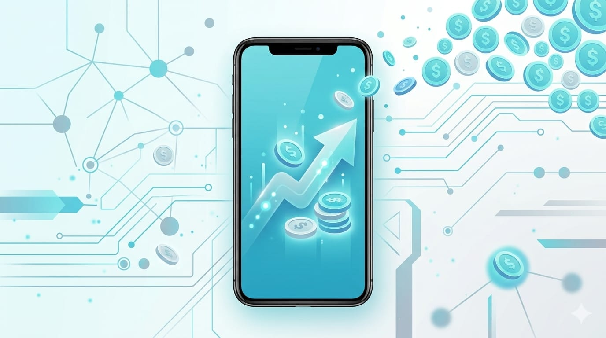

歷經前五篇，你的 App 已經從零做到上架 App Store了。這是 iOS 路徑的最後一篇，我們談最實際的問題：怎麼讓它變成收入。
先說一個心態：變現方式沒有最好，只有最適合你的 App。工具型、遊戲型、內容型，適合的模式都不同。這篇幫你把選項和判斷邏輯理清楚。
四種主要變現方式

1. 付費下載（Paid App）
使用者付一次錢才能下載。
- 優點：最單純，下載即收入。
- 缺點：門檻高，現在多數人習慣「先免費試」，除非你的 App 很有特色或口碑，不然下載數會受影響。
- 適合：定位清楚、目標客群明確、有獨特價值的工具型 App。
2. App 內購買（In-App Purchase，IAP）
免費下載，App 裡面賣東西——解鎖功能、買道具、去廣告、買進階版。
- 優點：降低下載門檻，讓用戶先體驗再付費。彈性最高。
- 缺點：要設計好「哪些免費、哪些付費」的界線。
- 適合：手遊（買道具）、工具 App（解鎖進階功能）。
3. 訂閱制（Subscription）
按月或按年持續收費。
- 優點：收入穩定可預期，是現在最主流的模式，尤其工具型、內容型 App。
- 缺點：你要持續提供價值，讓用戶覺得「值得一直付」，否則會被取消。
- 適合：需要持續更新內容或服務的 App（新聞、健身、生產力工具、雲端服務）。
4. 廣告（Ads）
App 裡放廣告，靠曝光和點擊賺錢。
- 優點：用戶不用掏錢，門檻最低。
- 缺點：要夠大的用戶量才有意義，而且放太多會傷體驗。
- 適合：用戶量大、使用頻繁的免費 App。iOS 上常搭配 Google AdMob 等廣告平台。
技術上怎麼實作？認識 StoreKit
內購和訂閱在 iOS 上都是透過 Apple 的 StoreKit 框架實作。你不用自己處理刷卡金流——付款由 Apple 統一經手，你的程式只負責「提供商品、確認使用者買了沒、解鎖對應內容」。
流程大致是：
- 在 App Store Connect 後台設定你的商品（例如「進階版 NT$90」「月訂閱 NT$60」）。
- App 裡用 StoreKit 顯示商品、發起購買。
- 購買成功後，解鎖對應功能（例如把
@AppStorage("isPro")設為 true）。
現代的 StoreKit 已經簡化很多，SwiftUI 也有現成的購買介面元件可用。這系列先建立觀念，實作細節可以在你確定要做內購時再深入 Apple 的 StoreKit 文件。
別忘了：Apple 會抽成
透過 App 收到的錢，Apple 會抽一定比例的服務費：
- 一般情況大致是 15%~30%。
- 小型開發者（年營收在一定門檻以下）通常適用較低的 15%——對剛起步的個人開發者是好消息。
- 廣告收入則是跟廣告平台拆帳，規則不同。
抽成比例與方案 Apple 會調整，且各地區可能不同，實際請以 Apple 官方說明與 App Store Connect 為準。
定價與選擇建議
給你幾個實用的判斷方向：
- 先想清楚 App 的價值型態：一次性價值（買斷/內購）還是持續性價值（訂閱）？工具給答案就走內購，持續服務就走訂閱。
- 免費 + 內購/訂閱，通常比純付費下載好推：讓人先用、體驗到價值，再付費，轉換率較高。
- 廣告要留到有量再說：初期用戶少，廣告賺不到什麼，反而傷體驗，不划算。
- 定價別只看數字，看「感受到的價值」：一個幫用戶省時間、解決真痛點的工具，月費 NT$60 很多人願意付；反之再便宜也沒人要。
- 可以混合：免費版 + 內購解鎖 + 進階功能訂閱，很常見的組合。
不上架也能賺：別忽略這兩條路
變現不是只有商店這一條。這也呼應這個系列一開始的總覽篇：
- 接案：你會開發之後，幫別人做 App 是最快、最直接的收入，不用自己養用戶。
- 企業內部工具 / 自用：幫公司做內部 App、或把自己的工作流程自動化。像我自己就寫了一些實用工具來解決真實需求——技術的價值不一定要透過商店才能兌現。
這一步大約要花多久？
理解變現機制、在 App 裡接上內購或訂閱，抓 1~2 週。但要提醒：賺錢的關鍵從來不是技術，是你的 App 有沒有解決真問題。技術只是把價值變現的管道；先把 App 做得有人真的想用，變現才有意義。
iOS 路徑完成了！
恭喜你走完整條 iOS 學習路徑——從裝環境、學語言、做畫面、串資料、上架，到變現。你現在具備了獨立開發並發布一個 iPhone App 的完整能力。
接下來這個系列還有：
- Android 開發學習路徑（結構跟 iOS 對稱，學過 iOS 再學會快很多）。
- 跨平台方案總覽（Flutter、React Native、KMP，一次寫兩邊共用的選擇）。
但更重要的是——去做一個你自己的 App 吧。看再多教學，都不如親手做完一個來得扎實。你已經有能力了。🐾
系列導覽
- 📚 回到 App 開發完整指南 全系列目錄
- ⬅️ 上一篇：完整上架 App Store
- ➡️ 下一篇：Android 開發第一步：環境準備（進入 Android 路徑）